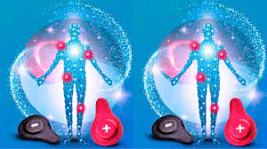

O que é biomagnetismo?
O Biomagnetismo é um sistema terapêutico desenvolvido pelo médico Isaac Goiz Duran, em 1988.
Esses ímãs possuem a função de neutralizar focos de alcalinidade e acidez do organismo e, desta forma,
ajudar a eliminar as causas de diversas doenças provocadas por vírus, fungos, bactérias outros microorganismos.
A partir da aplicação do biomagnetismo, é possível corrigir as alterações do pH e assim eliminar não somente os
sintomas, mas atacar a causa de muitas doenças.Esse reconhecimento é feito com imãs passivos (não eletrificados)
que são aplicados em diversas zonas do corpo humano, a maioria deles coincidem com os pontos utilizados pela
acupuntura. Funciona como uma espécie de scanner biomagnético. Ao reconhecer essas áreas, o
terapeuta aplica um conjunto de ímãs em pares nos pontos em desequilíbrio, sendo possível restabelecer o sistema
de defesa do corpo
Como funciona o biomagnetismo?
As sessões de biomagnetismo atuam nas células do corpo para auxiliar no equilíbrio energético e do pH ( potencial de
hidrogênio), com o objetivo de auxiliar na eliminação de vírus, bactérias, fungos e parasitas. Em tecidos e órgãos sadios
o pH é neutro. Quando esse pH se torna ácido ou alcalino, o ambiente fica propício para a sobrevida de agentes patógenos e
que potencializam as mais variadas doenças. O impacto magnético produzido pela aplicação dos imãs, faz com que os
patógenos sucumbam, facilitando a recuperação de diversos desequilíbrios e restabelecendo a saúde . São ímãs de cargas
positivas e negativas que têm a finalidade de nivelar esse PH. “ O feito que conseguimos com essa técnica é o ajuste do
equilíbrio interno do organismo e, com isso, o alívio dos sintomas
Efeitos colaterais do Biomagnetismo
Segundo a terapeuta, apesar de ser uma técnica não invasiva, não é recomendável que seja aplicada em
gestantes com menos de três meses de gravidez e também em pessoas que utilizam marcapassos ou qualquer dispositivo
bioeletrônico. Além disso, não se deve fazer o uso de imãs de polaridade positiva sob processos infecciosos ou
inflamatórios. Outra restrição é em pessoas que passaram por quimio ou radioterapia durante os últimos 13 anos.